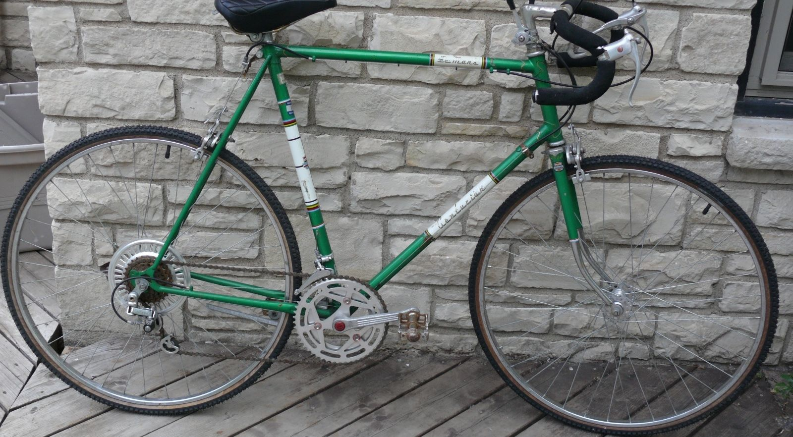

The model which introduced the Centurion brand and probably the most popular model through 1984 It evolved constantly over the years, In the beginning of Centurion there was two models the LeMans and the lower end Sport. Now the Lemans was not a exotic Italian or French bike. it did not have Campagnolo components . what it did have was a very well functioning Suntour components. by 1974 the LeMans had Suntour V GT Luxe. which was top of the line for Suntour in 1974. in these the days before Cyclone and Superbe
By the mid eighties they became the LeMans RS model, which was now a solid and popular income-generating, mid-priced machine.
1976 high-tensile steel frame,10-speed Front Derailleur: Suntour SL Rear Derailleur: Suntour V-GT Luxe Shifters: Suntour Barcons Freewheel: Suntour Pro-Compe Cranks: SR Apex Brakes: Dia-Compe Centerpull Rims: Araya Hubs: Suntour Sunshine Bars: Sakae Road Champion Randonneur Seat: Elina Super Pro
1980s (Early) 12-speed with a Tange Infinity tubeset and a mix of Suntour and Sugino components.
1987 it boasted the somewhat lighter and seamless double-butted Tange #2 tubeset and Shimano's "Light Action, Light Touch" group.
Early 70s Model
Frame: Hand Brazed Hi-Tension Steel lugs with brazed on cable stops
Fork: High Tension butted steel with special chrome steel crown, chrome tips and drop forged ends
Paint: Double undercoat with two coats of baked enamel, Finished with a highly resistant clear lacquer.
Brakes: DiaCompe alloy center pull with quick release,
Brake-Levers: alloy racing levers and safety levers
Rear Derailleur: SunTour Wide range VGT/LUXE alloy
Front Derailleur: Suntour SL alloy front,
Shifters: Suntour Power stem shifters
Freewheel: 14t-28t, 5 Speed
Crankset: Tourney 5 Pin Cotterless alloy 52/40t
Pedals: MKS Balanced Rat Traps
Wheels:Araya Steel Rims
Hubs: Sunshine Alloy Wide Flange
Tires: Special Centurion 85lb Hi-Pressure Gumwall Tires
Handlebar: Sakae Custom Road Champion Engraved alloy drop bar with black tape and plugs
Stem: Sakae alloy allen head stem
Saddle: Naugahyde covered fully padded racing saddle with quilted top
Extras: Alloy Spoke Protector and two inch rear reflectors.
Sizes: 19" 21" 23" 25"
Colors: Red, Blue, Silver, Coffee, Yellow, GreenSizes: 19" , 21"
Colors: Red, Blue, Silver, Yellow
1988 Specs
Frame: Tange #2
Fork: Tange 2001 Mangaloy
Stays: Tange 2001 Mangaloy
Grouppo: drivetrain was complete Shimano Exage Sport, including pedals.
Wheels: Exage Sport hubs laced to Araya 700C rims.
Freewheel: 12-26T, 6 speed cassette
Chainrings: 42/52T
Bars: Kusuki aluminum models
Stem: Kusuki aluminum models.
Saddle: Centurion branded Vetta.
Weight:claimed 24.5 lbs ( 56cm frame).
Sizes 46, 48, 50, 52, 54, 56, 58, 60 & 64 cm.
MSRP $425 US retail.
1989 it appeared with the Tange #2 tubeset but fitted with Shimano Sport LX components. Alot of times the color schemes may have been used the year before on the higher models, as example the lemans above with the white to purplesmoke fade paint, although this was available on the 1988 Models,given the Decals, this was a 1989 model. Dont let the colors trick you.
In the mid 70's the LeMans sold for $139. and the Super LeMans for $189.
2019 Vintage-Centurion.com